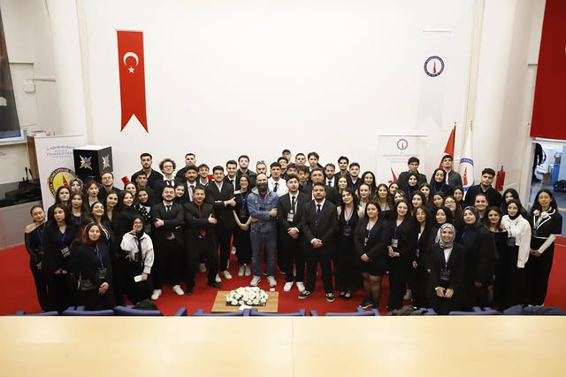

Standımıza uğra.
Oryantasyon haftasında standımıza gel, ekiple tanış ve katılım süreci hakkında bilgi al.
ÜYELİK VE İLETİŞİM
Her bölümden öğrenci topluluğa katılabilir. Üyelik adımlarını aşağıda bulabilir, sorularını bize yazabilirsin.
ALANINI KEŞFET
Oryantasyon haftasında standımıza gel, ekiple tanış ve katılım süreci hakkında bilgi al.
Tanışma toplantısına ve tanışma kahvaltısına katıl. Topluluğu ve departmanları yakından tanı.
Mülakat duyurularını Instagram’dan takip et. Paylaşılan tarihlerde mülakatlarımıza katıl.
DEPARTMAN SEÇİMİ
İlgilendiğin departmanı seçerek aşağıdaki iletişim alanına geçebilirsin. Henüz karar vermediysen birlikte konuşalım.
İnsanları ve fikirleri bir araya getir.
Araştırma · Topluluk içi iletişimBuluşmaları destekleyen iş birliklerini kur.
Sponsorluk · Kaynak desteğiİnovel’in sesini ve görüntüsünü şekillendir.
Tasarım · Sosyal medya · PodcastHikâyemizi daha fazla insana ulaştır.
Tanıtım · Marka · İçerik üretimiBirlikte öğren, geliş ve çözüm üret.
Kişisel gelişim · YetkinlikİLETİŞİM
Katılmak istediğin alanı veya aklındaki soruyu bizimle paylaş. Genel iletişim ve iş birliği için de bize yazabilirsin.
iletisim@inoveldpu.comSüreç oryantasyonda standımızda tanışmayla başlar; tanışma toplantısı, tanışma kahvaltısı ve mülakatlarla devam eder. Duyurular Instagram’da paylaşılır. Bu formdan soruların için e-posta taslağı hazırlayabilirsin.
KAMPÜSTE GÖRÜŞELİM.
Etkinlik duyuruları ve topluluk hayatı için:
INSTAGRAM’DA İNOVEL